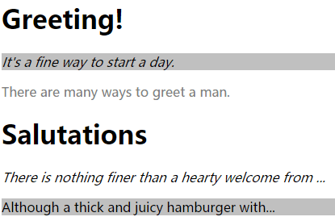

特殊性
如果一个元素有两个以上冲突的属性声明，那么特殊性（specificity）高的声明将会胜出。特殊性的值表述为四个部分，如0,0,0,0，具体规则：
1.选择器中给定的各个ID属性值，加0,1,0,0。
2.选择器中给定的各个类属型值，属性选择和伪类，加0,0,1,0。
3.选择器中给定的各个元素和伪元素，加0,0,0,1。
比如：
1 | h1 {color: red;} /* specificity = 0,0,0,1 */ |
特殊性大小的比较规则为从左到右，数值大的越大。
举个例子，考虑有如下规则的html：
1 | <style> |
最终显示如下图所示：

内联样式特殊性
特殊性值的第一位是为内联样式保留的，每个内联样式的特殊性都为1,0,0,0，比如下面的h1元素将显示为绿色：
1 | h1#meadow {color: red} |
重要性
对于某个非常重要的声明，可以在这些声明的结束分号前插入!important。如果一个非重要声明和重要声明冲突，胜出的总是重要声明。
如：
1 | <style> |
最终h1为绿色。
继承
对于继承的值没有特殊性，而非0特殊性。举个例子：
1 | <style> |
显示如下图所示：
结果证明了0特殊性比无特殊性要强。
按权重和来源排序
一般来说，权重由大到小的顺序为：
1.读者的重要声明。
2.创作人员的重要声明。
3.创作人员的正常声明。
4.读者的正常声明。
5.用户代理声明。
CSS中的样式一共有三种来源：创作人员、读者和用户代理。
创作人员（author’s+style）样式应该是我们最熟悉的，如果你是一个前端开发者，那么你写的那些样式就叫做创作人员样式。
用户代理样式（agent’s+style）。用户代理也就是我们通常所说的浏览器（IE、Firefox等等），这些浏览器会提供一些默认的样式。
读者样式（reader’s+style）。所谓读者自然就是浏览网页的用户，有些时候这些用户里可能会有人不满意网页的配色，或者字体大小，这时候他们就是通过浏览器提供的接口为网站添加读者样式。
比如：
1 | p em {color: black;} /* author's style sheet*/ |
第一条规则将胜出。
1 | p em {color: black ;} /* author's style sheet*/ |
第二条规则将胜出。